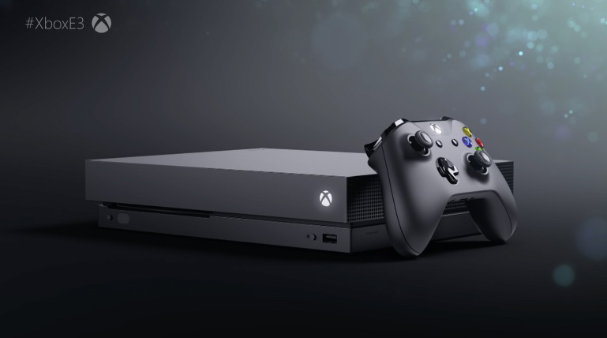

You can preorder Intel's Kaby Lake-X and Skylake-X CPUs next week
Intel formally introduced its Kaby Lake-X and Skylake-X processor lineup at Computex last month, but at the time it didn't say anything about a specific release date. It turns out that Intel was waiting for E3 to announce availability. Starting on June 19 (this coming Monday), some of Intel's Core-X series CPUs will be available to preorder.
You can preorder Intel's Kaby Lake-X and Skylake-X CPUs next week

Several weeks ago Microsoft lifted the covers slightly off its new next-gen console, codenamed Project Scorpio. Today, the software giant took the full wraps off what is now called the Xbox One X, which launches this year for $500. Here's the lowdown on how powerful Scorpio is, and how it compares to a gaming PC.
Buy a GTX 1080 or 1080 Ti, get Destiny 2 free with early beta access
Several weeks ago Microsoft lifted the covers slightly off its new next-gen console, codenamed Project Scorpio. Today, the software giant took the full wraps off what is now called the Xbox One X, which launches this year for $500. Here's the lowdown on how powerful Scorpio is, and how it compares to a gaming PC.